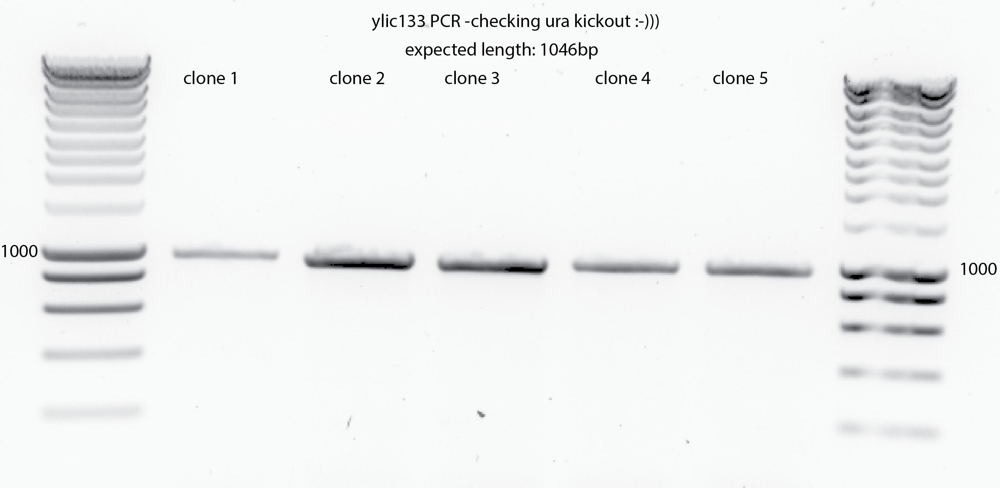
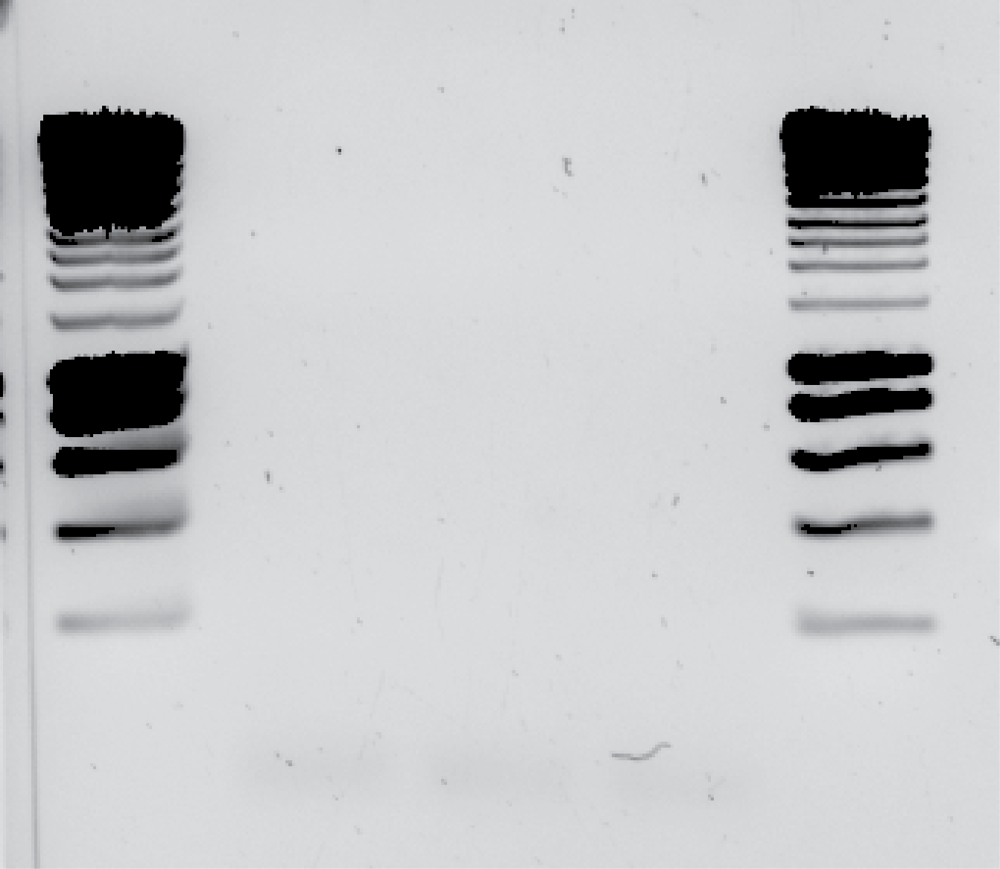
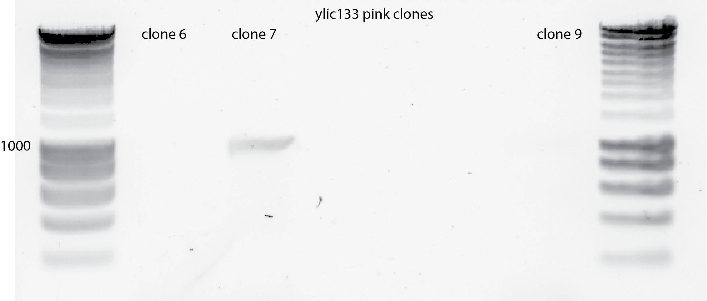
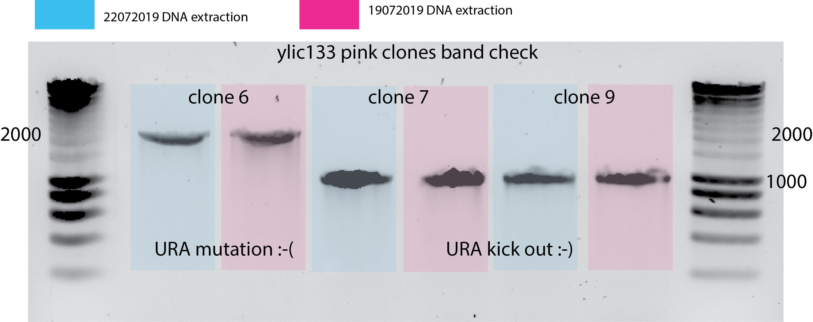

Title : 17072019-DNA extraction of ylic133: ura3- ade2- clones anad PCR :ok: :white_check_mark:¶
Date¶
Wednesday 17072019
Objective¶
To extract the DNA to precisely check that neither ade3 nor ura3 is in the genome.
Method¶
DNA extraction KIT EurX
Elution of clones 1-3: 50ul because they were dense after overnight culturing.
Elution of clones 4-5:10ul because they were not dense at all after overnight culturing.
DNA nanodrop
ylic133_1: 28.9 ng/ul
ylic133_2: 32.8 ng/ul
ylic133_3: 16.9 ng/ul
ylic133_4: 2.7 ng/ul (This one I had a very small pellet at the starting)
ylic133_5: 6.5 ng/ul (This one I had a very small pellet at the starting)
ylic133_6: 4.6 ng/ul from 19072019 extraction(not good quality DNA, 260/280=2.42,260/230=1.10)
ylic133_7: 7.7 ng/ul from 19072019 extraction(regular DNA quality,260/280=1.9,260/230=1.7)
ylic133_9: 9.3 ng/ul from 19072019 extraction(not good quality DNA, 260/280=2.32,260/230=1.94)
ylic133_6: 7.8 ng/ul from 22072019 extraction (not good quality DNA, 260/280=2.4,260/230=0.94)
ylic133_7: 7.1 ng/ul from 22072019 extraction(not good quality DNA, 260/280=2.65,260/230=0.84)
ylic133_9: 6.9 ng/ul from 22072019 extraction(not good quality DNA, 260/280=2.16,260/230=0.92)
PCR with primer 22 and primer 23 of all of them , using 1ul of templates, each of the DNAs.
Results :)¶
DNA Gel 😁😁 The bands are ALL IN THE RIGHT LENGTH of colonies from 1-5 
The 1st PCR using clones 6,7 and 9 DID NOT WORK , I DID NOT GET ANY BAND :( 😕 
The 2nd PCR just work clone 7 and very faint band.. something was not right with the genomic prep this time.. :( 
The 3rd PCR with the DNA extracted from 19072019 and from 22072019, using 1ul of template ine ach of them. 
Conclusion¶
These clones are not pink in the re-streaking plate in YPD after 2 days of incubation.. so if they dont have the right deletion I should take the other ones 6, 7 and 9 which are pink.
I will do also the genomic prep for the pink clones from the 5FOA plates, namely , clones, 6,7 and 9.
After the repeat of the genomic prep for clones 6, 7 and 9, we can see that the clones 7 and 9 are the correct ones, meaning that they are the ones that have the ura kickout and not an URA mutation as clone 6.